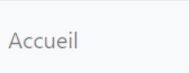
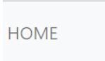
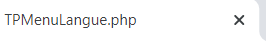
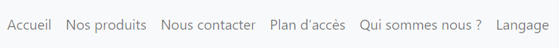

TP01 - Affichage, déclaration de variables, tableaux (1/6)
Objectif
Créer un menu bilingue : francais, anglais.
Attention
Ne remplissez pas le rapport sur votre navigateur , vous ne pourrez pas le sauvegarder.
Téléchargez le sur votre disque dur !
Prérequis
Avant de commencer
Attention
Vérifiez bien que vous êtes en UTF8.
Copiez le code suivant dans un fichier que vous allez appeler TPMenu.php :
<?php
?>
<!doctype html>
<html lang="fr">
<head>
<!-- Required meta tags -->
<meta charset="utf-8">
<meta name="viewport" content="width=device-width, initial-scale=1">
<!-- Bootstrap CSS -->
<link href="https://cdn.jsdelivr.net/npm/bootstrap@5.0.0-beta1/dist/css/bootstrap.min.css" rel="stylesheet" integrity="sha384-giJF6kkoqNQ00vy+HMDP7azOuL0xtbfIcaT9wjKHr8RbDVddVHyTfAAsrekwKmP1" crossorigin="anonymous">
<title>TP01</title>
</head>
<body>
<nav class="navbar navbar-expand-lg navbar-light bg-light">
<ul class="navbar-nav">
<li class="nav-item">
<a class="nav-link" href="#presentation">Accueil</a>
</li>
</ul>
</nav>
<script src="https://cdn.jsdelivr.net/npm/bootstrap@5.0.0-beta1/dist/js/bootstrap.bundle.min.js" integrity="sha384-ygbV9kiqUc6oa4msXn9868pTtWMgiQaeYH7/t7LECLbyPA2x65Kgf80OJFdroafW" crossorigin="anonymous"> </script>
</body>
</html>
Il s'agit d'une page HTML, même si l'extension du nom est en php, qui utilise le framework css
Bootstrap.
Vous n'avez pas à vous occuper du design, bootstrap le fait pour vous !
Résultat
Lancez TPMenu.php pour voir si tout fonctionne. Vous devez obtenir ceci :

Exercice 1 - Affichage en php
a - Insertion de balises PHP
Nous voulons que les titres des menus puissent être définis par le programmeur. Pour ce faire
nous allons adapter
une version anglaise.
Avant le doctype insérez le code suivant :
<?php
//Déclaration de variables
$menu01="ACCUEIL";
$menu02="HOME";
?>
En vous aidant de la documentation php répondez aux questions suivantes :
- A quoi correspondent menu01 et menu02 ?
- Pourquoi il y a t il un $ devant leur nom ?
- A quoi sert le ; à la fin de chaque ligne ?
- Pourquoi ACCUEIL et HOME sont entre
" ?
- Pourquoi le code
//Déclaration de variables, n’apparaît
pas à l'écran ?
- Pourquoi lorsque l'on execute le fichier, seul le code HTML de la page apparaît ?
- A quoi correspond l'extension php ?
b - Paramétrons le lien accueil :
Remplacez le lien existant par celui ci-dessous et exécutez la page.
<a class="nav-link" href="#presentation"><?php echo $menu01;?></a>
Résultat de menu01
Lancez TPMenu.php pour voir si tout fonctionne. Vous devez obtenir ceci :
Remplacez $menu01 par $menu02.
Résultat de menu02
Lancez TPMenu.php pour voir si tout fonctionne. Vous devez obtenir ceci :

En vous aidant de la documentation php répondez aux questions suivantes :
- A quoi servent les balises
<?php et ?> ?
- A quoi sert l'instruction
echo ?
- Pourquoi à l'affichage nous avons ACCUEIL et non pas $menu01 ?
- Pourquoi à l'affichage nous avons ACCUEIL et non pas "ACCUEIL" ?
- Que se passe-t-il lorsqu'on change $menu01 en $menu02 ?
Exercice 2 - Modification de la langue
Prérequis :
Copiez le code de TPMenu.php dans un nouveau fichier TPMenuLangue.php. Changez le contenu de la
balise titre comme l'exemple suivant
<title><?= basename(__File__)?></title>
Résultat de menu02
Lancez TPMenuLangue.php pour voir si tout fonctionne. Vous devez obtenir ceci :

b - Objectif :
Changer la langue du menu avec une zone de liste. Voici le tableau des correspondances :
| Français |
Anglais |
| accueil |
home |
| nos produits |
products |
| nous contacter |
contacts us |
| plan d’accès |
find Us |
| qui sommes nous ? |
about us |
| langue |
language |
Création au niveau de la déclaration de variables de 2 tableaux $menu01 et $menu02 à partir du
tableau précédent :
<?php
//Déclaration de variables
$menu01 = ["accueil","nos produits","nous contacter","plan d’accès","qui sommes nous ?","langage"];
$menu02 = ["home","products",...à compléter....];
$lang=array();
?>
En vous aidant de la documentation php répondez aux questions suivantes :
- Que signifie le caractère
[ ?
- Comment peut-on déclarer un tableau vide ?
- Pourquoi accueil et home sont entre
" ? (retirez les doubles cotes pour voir ce
qui se passe)
c - Affichage des valeurs
Nous allons saisir dynamiquement les valeurs en français.
- A partir de la ligne 21 (si vous avez correctement suivi le TP), supprimer les balises
<li> et les balises <a> qui sont à l'intérieur de la
balise <ul>.
- A cette place copiez le code suivant :
<?php
for ($i= 0; $i < count($lang); $i++) { ?>
<li><a class="nav-link" href="#" ><?php echo ucfirst($lang[$i]);?></a></li>
<?php } //fin de la boucle ?>
- Au début de la page remplacez
$lang=array(); par
$lang=$menu01;
Résultat de menu en français
Lancez TPMenuLangue.php pour voir si tout fonctionne. Vous devez obtenir ceci :

En vous aidant de la documentation php répondez aux questions suivantes :
- A quoi sert
$i ?
- A quoi correspond
count($lang) ?
- A quoi correspond
$lang[$i] ?
- Combien de balises
<li> seront
affichées ?
- Affichez le code source de votre navigateur. Le nombres de balises
<li> est-il le même que celui du
P01Menu.php ?
- Quelle est la différence entre le contenu de ces deux balises ?
- Ajoutez le code nécessaire pour supprimer cette différence.
- Changez
$lang=$menu01; en $lang=$menu02;, que se passe-t-il ?
- A quoi sert cette instruction ?
- Que fait la fonction
ucfirst()?